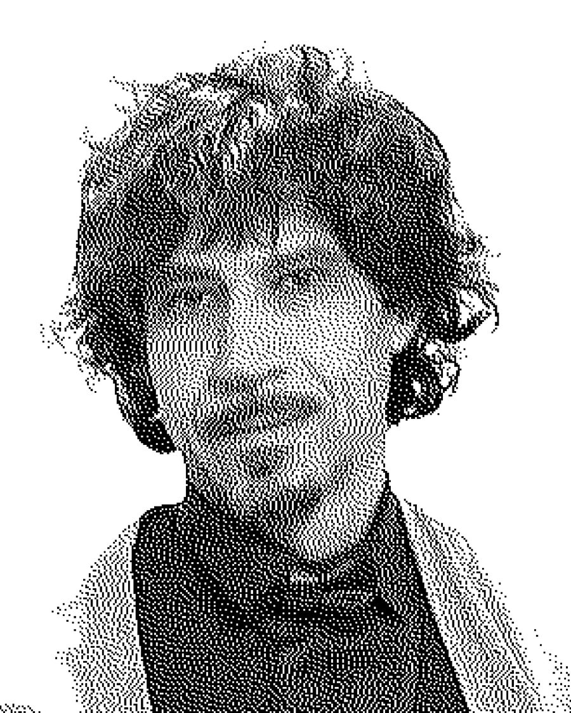
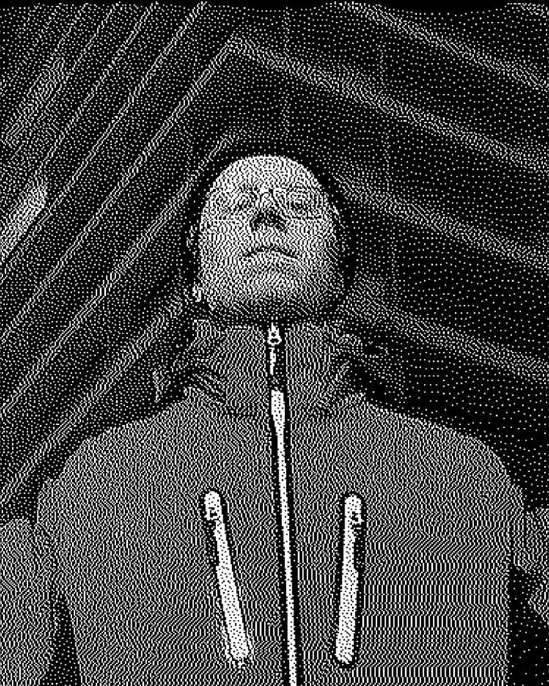
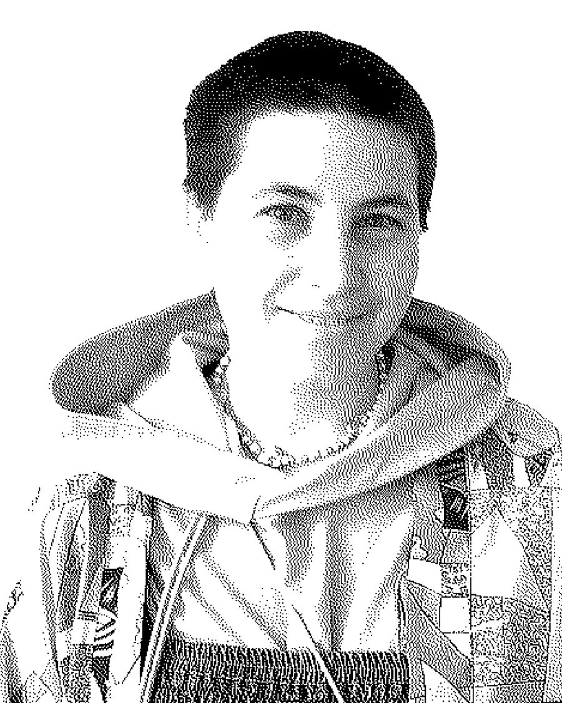
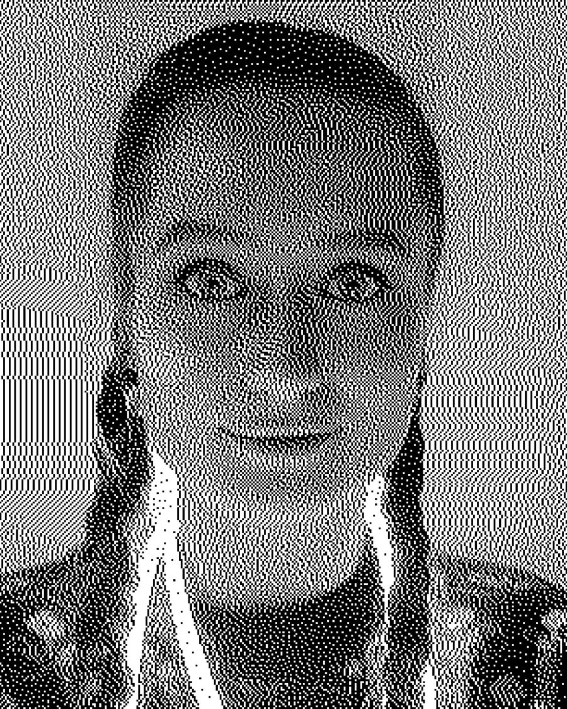

Учасники фестивалю Festival participants
24 учасники 24 participants Аліна СаприкаAlina Sapryka →
Аліна СаприкаAlina Sapryka →
 Аліна ХорольськаAlina Khorolska →
Аліна ХорольськаAlina Khorolska →
 Анна СінельнікAnna Sinelnik →
Анна СінельнікAnna Sinelnik →
 Андрій ГорбальAndrew Horbal →
Андрій ГорбальAndrew Horbal →
 Андрій КальковAndrii Kalkov →
Андрій КальковAndrii Kalkov →
 Коля ЯнKola Jann →
Коля ЯнKola Jann →

Фантаяр ШухакFantayur Shuhak → Вадим МахіткаVadym Makhitka →
Вадим МахіткаVadym Makhitka →
 Вартан Маркар'янVartan Markarian →
Вартан Маркар'янVartan Markarian →
 Вероніка ЧередниченкоVeronika Cherednychenko →
Вероніка ЧередниченкоVeronika Cherednychenko →
 Віталій ЯнковийVitaly Yankovy →
Віталій ЯнковийVitaly Yankovy →
 Влад ТретякVlad Tretiak →
Влад ТретякVlad Tretiak →

Євген КучерявийYevgenii Kucheriavyi → Владислав ЛебідьVladyslav Lebid →
Владислав ЛебідьVladyslav Lebid →
 Марго РезнікMargo Rieznik →
Марго РезнікMargo Rieznik →

Марія ВишедськаMashika Vysedska → Оксана КрижанівськаOksana Kryzhanivska →
Оксана КрижанівськаOksana Kryzhanivska →
 Олександр ГаліщукOleksandr Halishchuk →
Олександр ГаліщукOleksandr Halishchuk →
 Олександр ГанцOleksandr Hants →
Олександр ГанцOleksandr Hants →
 Олександр КудряшовOleksandr Kudriashov →
Олександр КудряшовOleksandr Kudriashov →

Роксолана ДудкаRoksolana Dudka → Сергій СімутінSerhii Simutin →
Сергій СімутінSerhii Simutin →
 Тімур ЛисенкоTimur Lysenko →
Тімур ЛисенкоTimur Lysenko →
 Діана ШайдаєваDiana Shaidaieva →
Діана ШайдаєваDiana Shaidaieva →